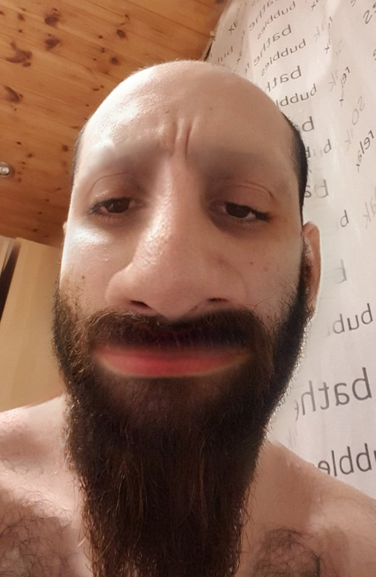
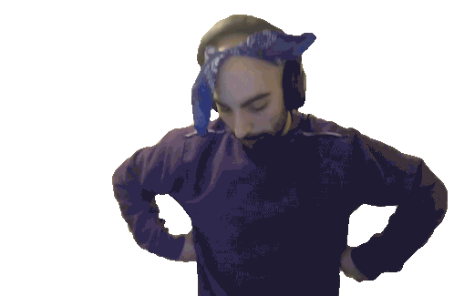
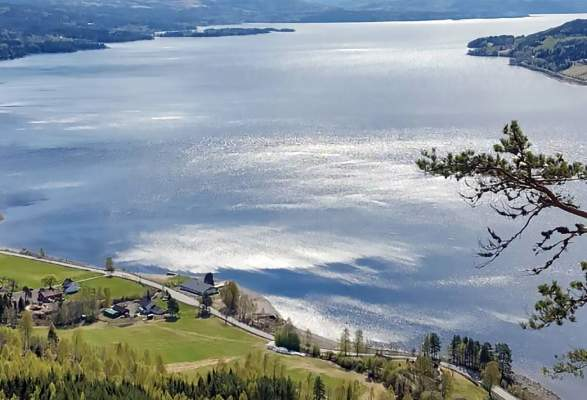

IT2 FØRSTE OPPGAVE
Sadig Kazaale
ting som inspirer meg er jonny sins isaiha Maxwell Torleiv låg sine naturfag timer
 
Press here
jeg bor i søndreland
Informasjon om Søndre land
befolking
område
hoteller
5 701 (2014
728 km²
3 stjerne gård hoteller

et kart over søndre land
Video av søndre land